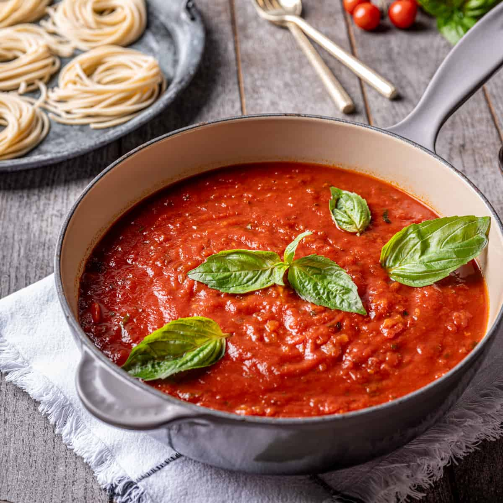

Sugo

Description
Sugo (meaning 'sauce' in Italian) is a traditional Italian tomato sauce made with ripe tomatoes cooked with extra virgin olive oil, onions, garlic, seasonings, and fresh basil.
Ingredients
- 1/3 cup extra virgin olive oil
- 2 cups diced yellow onions
- 1/4 cup finely chopped garlic
- 1 cup fresh basil leaves ribbon sliced (chiffonade) or whole
- 1 tsp crushed red pepper
- 4 (28 ounce) cans of whole peeled DOP San Marzano tomatoes
- 1 28 ounce can of water
- 1 tbsp dried oregano
- Salt and black pepper to taste (start with 1.5 tsp salt and 1/2 tsp black pepper)
- 1 handful of whole basil leaves
Steps
- Using a large sauce pot or Dutch oven, heat the olive oil and the onions together on medium heat and sauté until the onions are soft (about 5-7 minutes).
- Add garlic and continue to saute until the garlic is soft.
- Add the sliced basil and crushed red pepper and cook for 2 minutes while stirring.
- Add the tomatoes, water salt, pepper, and dried oregano and bring to a light boil, then immediately reduce to a low simmer. Continue to simmer partially covered for approximately 45-60 minutes. Adjust seasonings to taste.
- Remove from heat, stir in the remaining handful of fresh basil leaves, and serve! Store in the fridge for up to a week or freezer for up to 6 months.